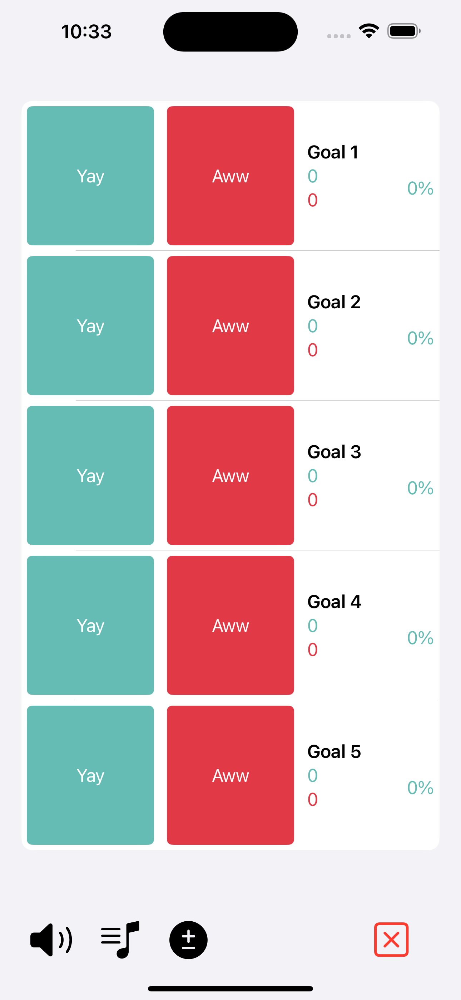

Designed for speech pathologists, ABA therapists, and other data-driven educators/clinicians. This app was developed in cooperation with an ASHA Certified Speech & Language Pathologist, Yay Data is an elegantly simple tool for data collection with highly effective auditory reinforcement. Choose from dozens of sounds to give auditory feedback on the student's performance. Watch as your student smiles and laughs at the funny sounds, striving to change their behavior to be able to hear the positive sound again. "I had a student eat potato chips for the first time just so he could hear the screaming goat. Its amazing the impact humor can have." - Certified Feeding Therapist "I was tracking the students progress using hash marks on pencil and paper, I now use Yay Data every day to keep track of my students data. I love how simple it is. It does exactly what I need it to do and no more." - ASHA Certified Speech & Language Pathologist.
